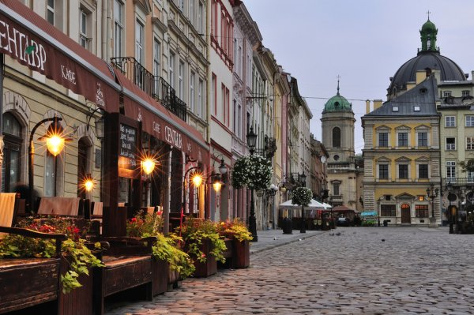

Народився 26 травня 1983 року в місті Христинівка Черкаської області
Освіта:
Львів — місто обласного значення в Україні, адміністративний центр Львівської області, національно-культурний та освітньо-науковий осередок країни, великий промисловий центр і транспортний вузол, вважається столицею Галичини та центром Західної України. За кількістю населення — сьоме місто країни (717 655 станом на 1 грудня 2021 року). Львів заснував король Данило приблизно у 1231—1235 роках (перша згадка від 1256 року). Близько 1272 року місто стало столицею Галицько-Волинського князівства. В добу Середньовіччя Львів був важливим торгівельним центром. За австрійського панування місто стає осередком українського та польського національно-визвольних рухів. Після розпаду Австро-Угорщини був столицею Західноукраїнської народної республіки. До Другої світової війни належав Польщі, за Пактом Молотова — Ріббентропа анексований Радянським Союзом. З 1991 року Львів перебуває у складі України. Історичний центр Львова занесено до списку Світової спадщини ЮНЕСКО. У 2009 року Львову надано звання Культурної столиці України.
